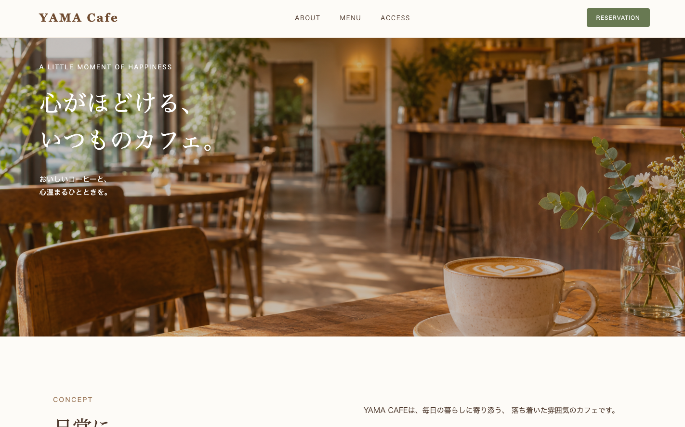
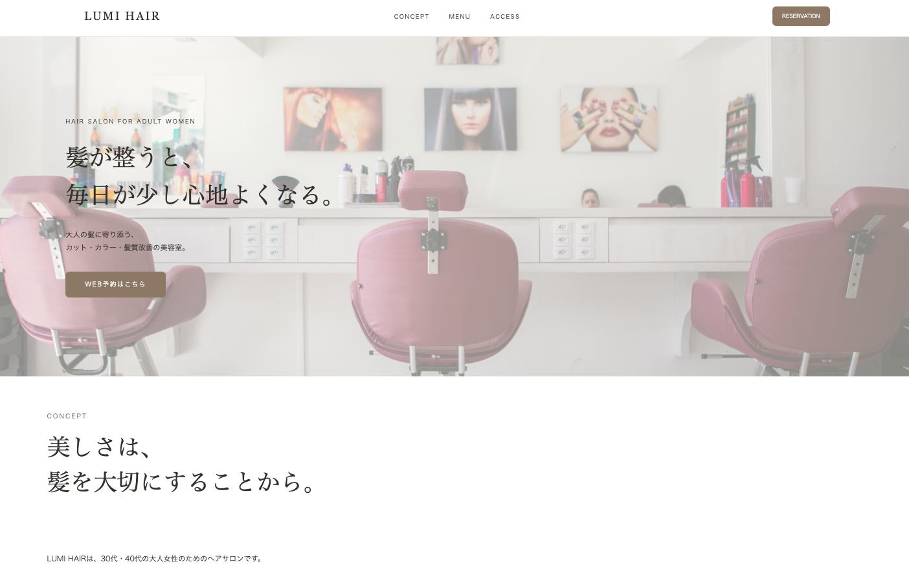

YAMA CAFE
架空のカフェサイト
温かく落ち着いた雰囲気を大切にした、 架空のカフェサイトです。
ベージュやブラウンを基調とした配色で、 親しみやすいデザインを意識しました。
HTML・CSSで制作し、 スマートフォン表示にも対応しています。
サイトを見る →ABOUT
HTML・CSSを中心に、 Webサイト制作に取り組んでいます。
これまでに美容室やカフェをテーマにした 架空サイトを制作し、 デザインからスマートフォン対応、 公開まで経験しました。
見やすさや使いやすさを大切にしながら、 丁寧なサイト制作を心がけています。
SKILLS
Webページの構造を作成します。
デザインやレイアウトを調整します。
スマートフォンやタブレットに対応します。
WORKS

架空のカフェサイト
温かく落ち着いた雰囲気を大切にした、 架空のカフェサイトです。
ベージュやブラウンを基調とした配色で、 親しみやすいデザインを意識しました。
HTML・CSSで制作し、 スマートフォン表示にも対応しています。
サイトを見る →
架空の美容室サイト
30代・40代の女性を想定した、 架空の美容室サイトです。
ベージュを基調とした落ち着いた配色で、 上品さと見やすさを意識しました。
HTML・CSSを中心に制作し、 スマートフォン表示にも対応しています。 予約ページやお問い合わせページも作成しました。
サイトを見る →CONTACT
Webサイト制作についてのご相談やご質問など、
お気軽にお問い合わせください。